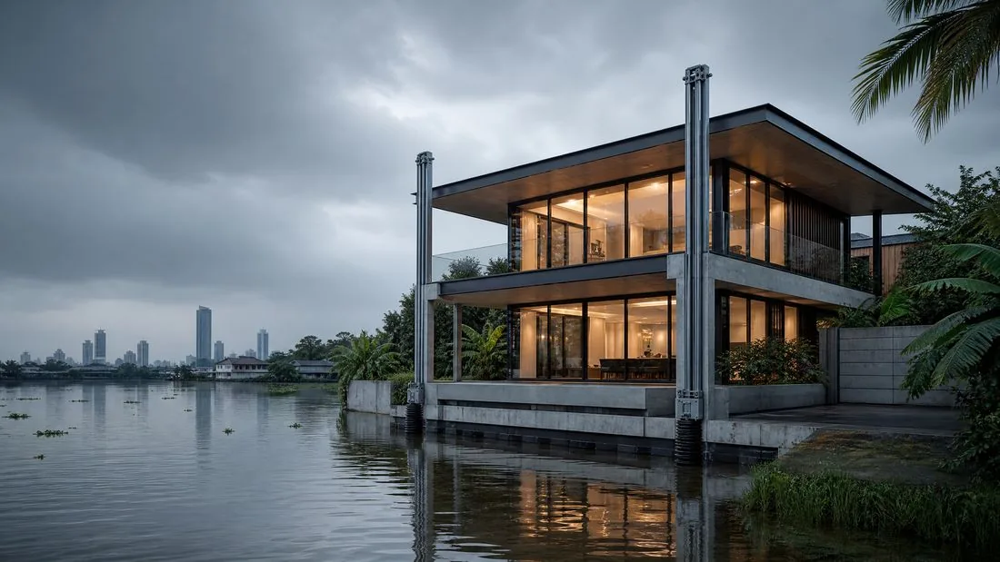
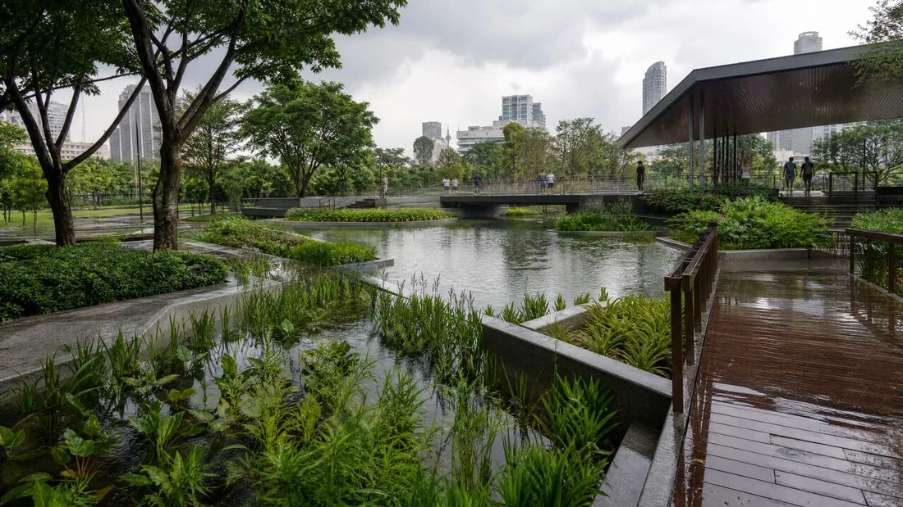

Journal
L'Architecture Résiliente et Flottante

Face à l'accélération de la montée des eaux, des métropoles comme Bangkok se retrouvent en première ligne. Avec une altitude moyenne très basse, la capitale thaïlandaise devient un terrain d'expérimentation pour une discipline émergente : l'architecture résiliente et flottante, qui ne cherche plus à repousser l'eau par des digues, mais à l'intégrer comme une composante à part entière de l'urbanisme.
De la ville qui coule à la ville qui flotte
Bangkok s'enfonce chaque année, une situation aggravée par le poids des tours et le pompage des eaux souterraines. Deux approches se dessinent en réponse : les structures amphibies, qui reposent normalement au sol mais s'élèvent en cas d'inondation grâce à des fondations creuses agissant comme des pontons ; et les quartiers flottants, inspirés des villages lacustres traditionnels, composés de modules interconnectés capables de s'adapter aux marées tout en produisant leur propre énergie.

Principes techniques et matériaux de résilience
Concevoir une architecture résiliente suppose une sélection rigoureuse de matériaux capables de résister à la corrosion saline et à l'humidité constante. Les stratégies combinent généralement une flottabilité passive assurée par des caissons étanches, un guidage vertical par poteaux télescopiques qui maintiennent le bâtiment en place pendant la crue, une autonomie énergétique via panneaux solaires ou hydroliennes, et une gestion des eaux usées par phytorestauration, grâce à des plantes et bio-filtres qui épurent naturellement l'eau.
Des projets pilotes en Thaïlande
Plusieurs projets pilotes thaïlandais démontrent déjà la viabilité de cette approche, combinant des essences locales comme le teck pour les structures et des fondations légères en polystyrène expansé protégé. À l'échelle urbaine, certains parcs de rétention conçus comme de véritables paysages résilients permettent de stocker de grandes quantités d'eau de pluie pour soulager le réseau municipal lors des épisodes de forte pluie.

Conclusion
L'architecture résiliente n'est plus une option futuriste mais une nécessité pour la survie des zones côtières. En transformant la menace de l'eau en opportunité de conception, les architectes créent des espaces fluides et autonomes, en harmonie avec les cycles naturels plutôt qu'en lutte contre eux.